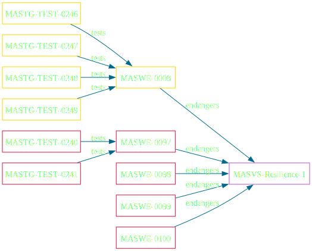
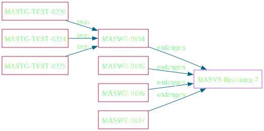
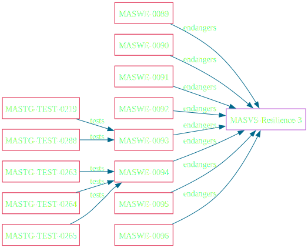
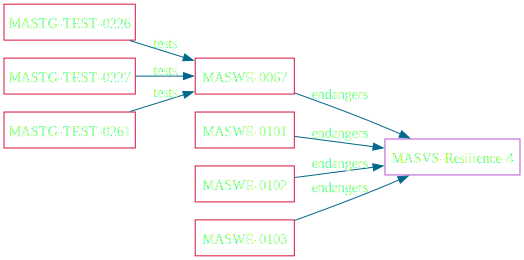

Hilft, Risiken zu mindern wie:
In einigen Kontexten, wie z.B. bei Regierungs-, Gesundheits- oder anderen Anwendungen von öffentlichem Interesse, sind Resilienzmaßnahmen möglicherweise aus mehreren Gründen nicht ideal:
The app validates the integrity of the platform.
The app implements anti-tampering mechanisms.
The app implements anti-static analysis mechanisms.
The app implements anti-dynamic analysis techniques.
L2
R
R
R



